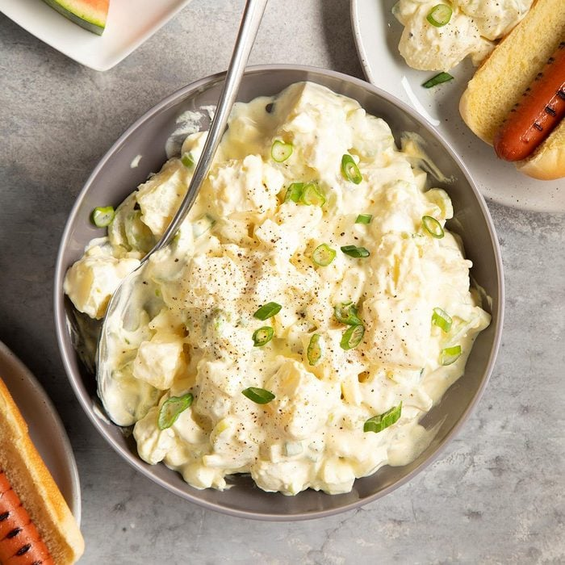

Old-Fashioned Potato Salad

Ingredients
- 5 potatoes
- 3 eggs
- 1 cup chopped celery
- ½ cup chopped onion
- ½ cup sweet pickle relish
- ¼ cup mayonnaise
- 1 tablespoon prepared mustard
- ¼ teaspoon garlic salt
- ¼ teaspoon celery salt
- ground black pepper to taste
Directions
- Gather all ingredients.
- Bring a large pot of salted water to a boil. Add potatoes and cook until tender but still firm, about 15 minutes.
- Drain, cool, peel, and chop potatoes.
- While potatoes cook, place eggs in a saucepan and cover with cold water. Bring water to a boil; cover, remove
from heat, and let eggs stand in hot water for 10 to 12 minutes.
- Combine the potatoes, eggs, celery, onion, relish, mayonnaise, mustard, garlic salt, celery salt, and pepper in a
large bowl. Mix together well and refrigerate until chilled.
- Enjoy!
Home